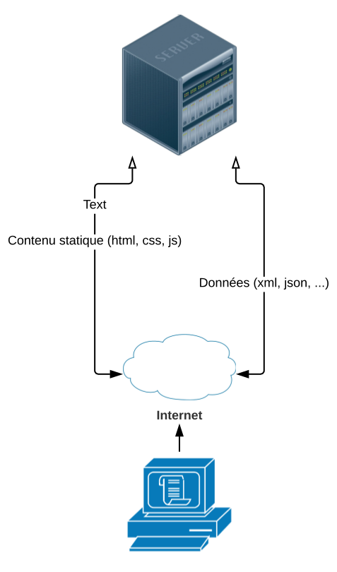
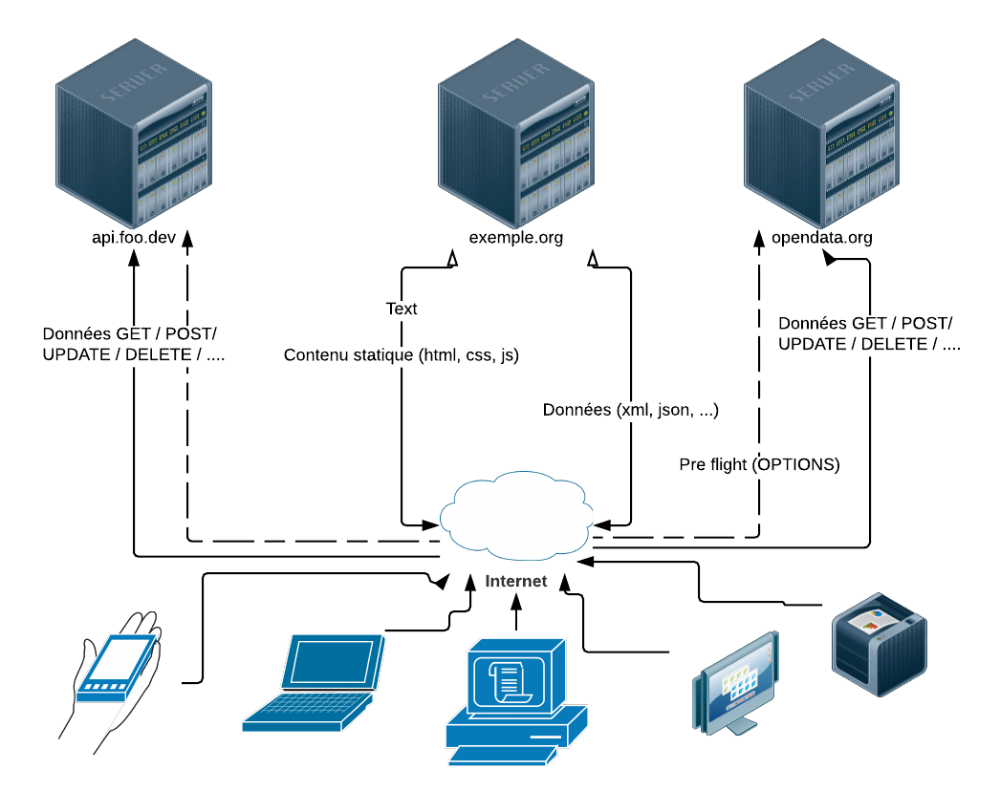
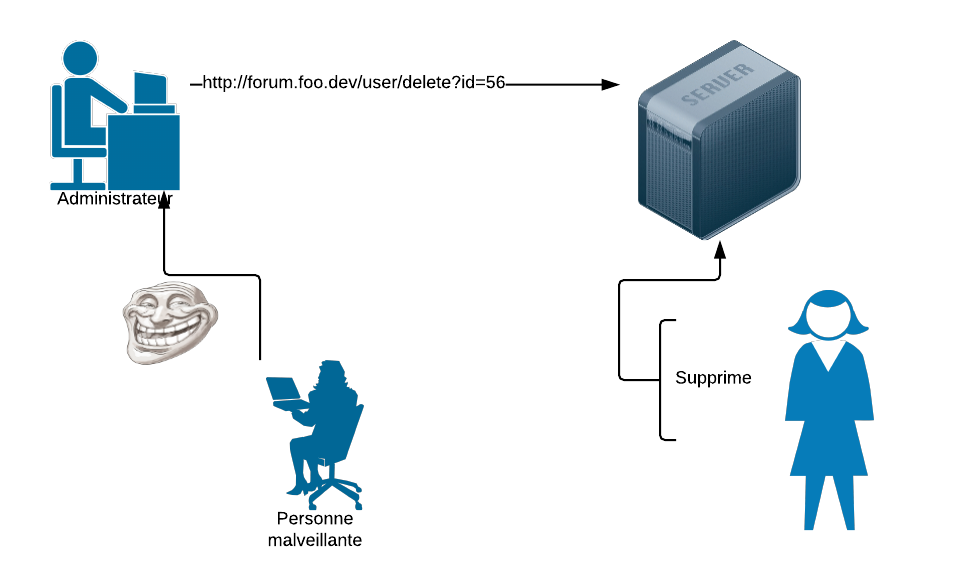
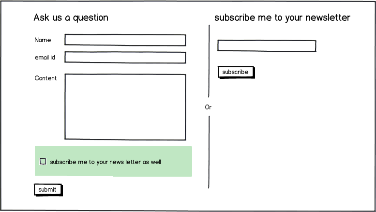

Origin
Access-Control-Request-Methođ
Access-Control-Request-HeadersCORS, XSS, CSRF, SQL injection #BackToTheBasics
Cross Origin Resource Sharing
Avant

CORS

En-têtes de requête
En-têtes de réponse
Access-Control-Allow-Origin
Access-Control-Allow-Credentials
Access-Control-Expose-Headers
Access-Control-Max-Age
Access-Control-Allow-Methods
Access-Control-Allow-Headersbrowser
Pre flight

curl / CORS everywhere / Postman
curl 'https://api.foo.dev/bar'
-H 'accept: application/json'
-H 'Origin: http://front.foo.dev'What’s the point?
Cross Site Scripting
exemple simple
exemple reacts / angular / vue
Attaque possible
Moyens de se défendre
Content Security Policy
Cross-Site Request Forgery

SQL injection
Form

<input/>
INSERT INTO subscriber VALUES (\'' + input.subscriber + '\');<input/>
a@a.a'); DELETE FROM subscriber; SELECT ('1<input/>
INSERT INTO subscriber VALUES ('a@a.a');
DELETE FROM subscriber;
SELECT ('1');